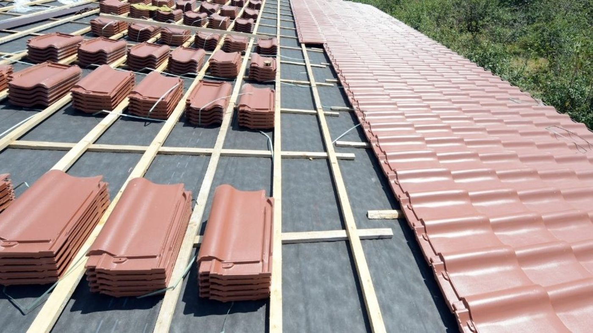
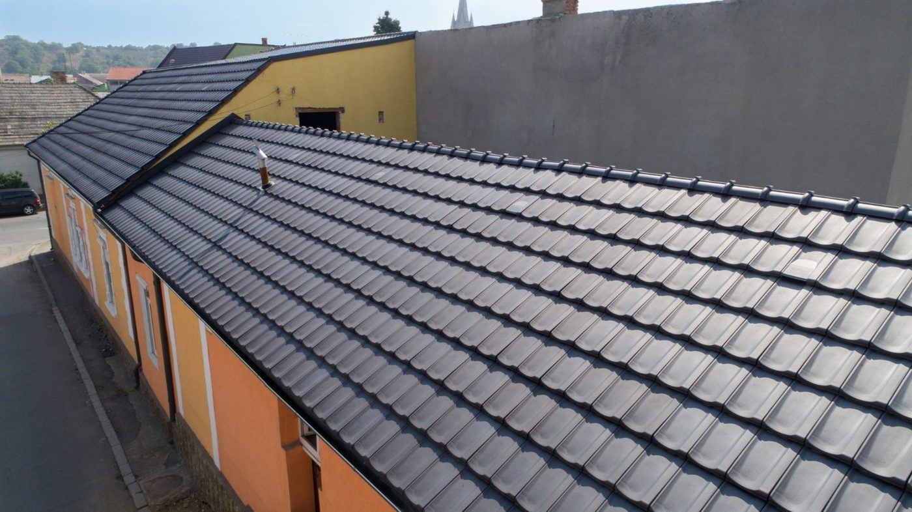
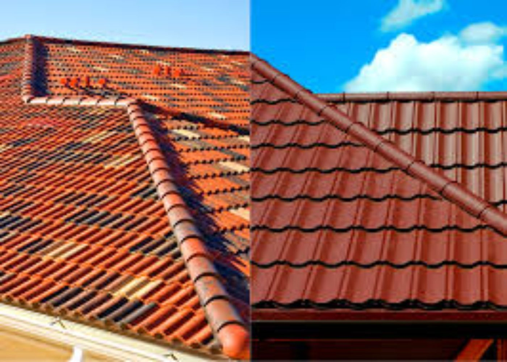
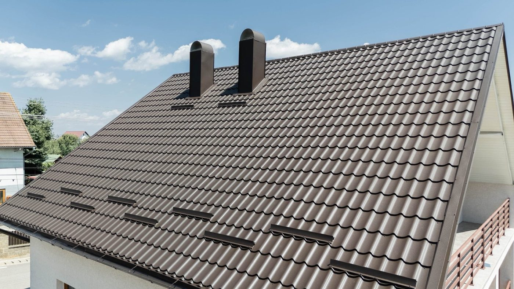
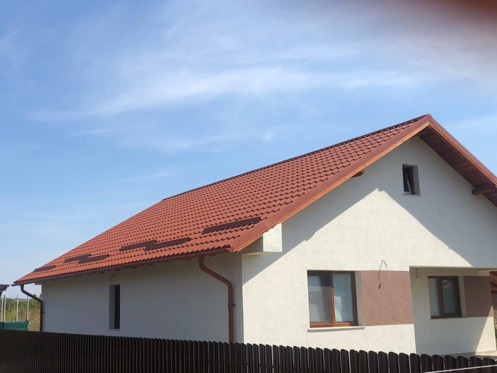
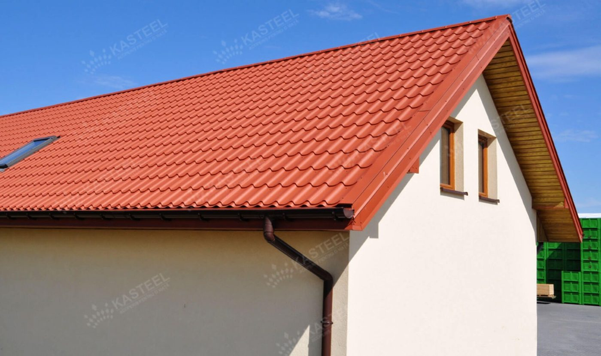
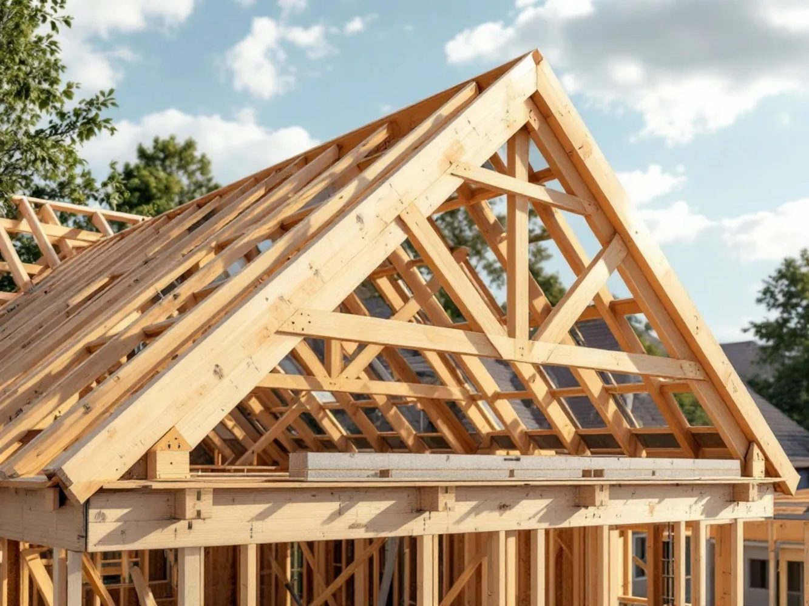
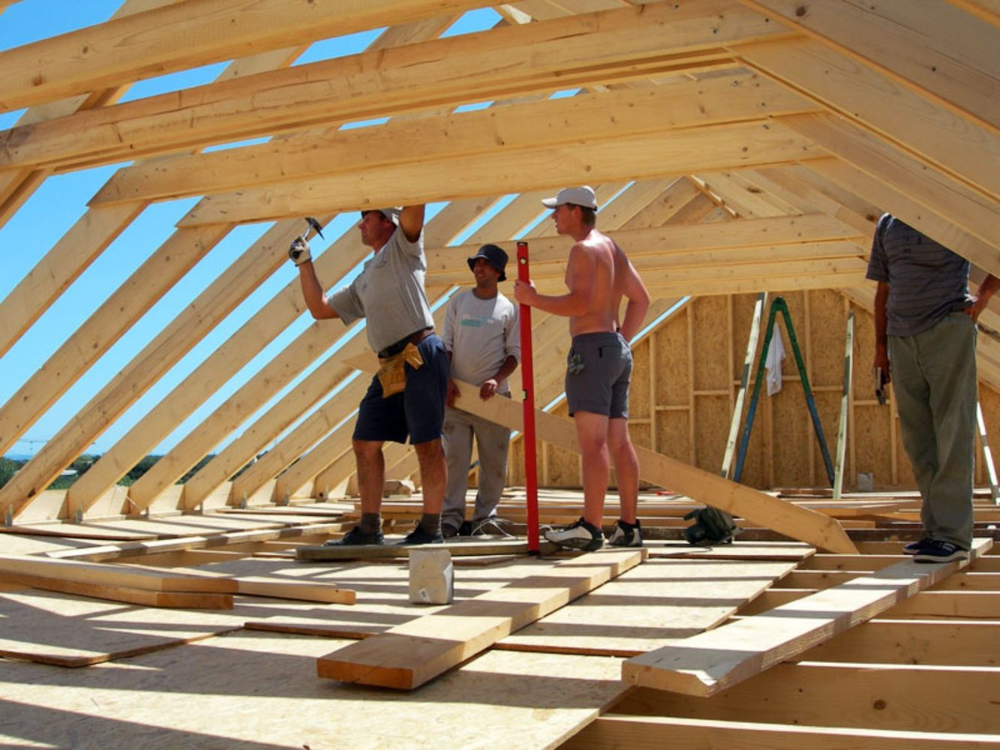
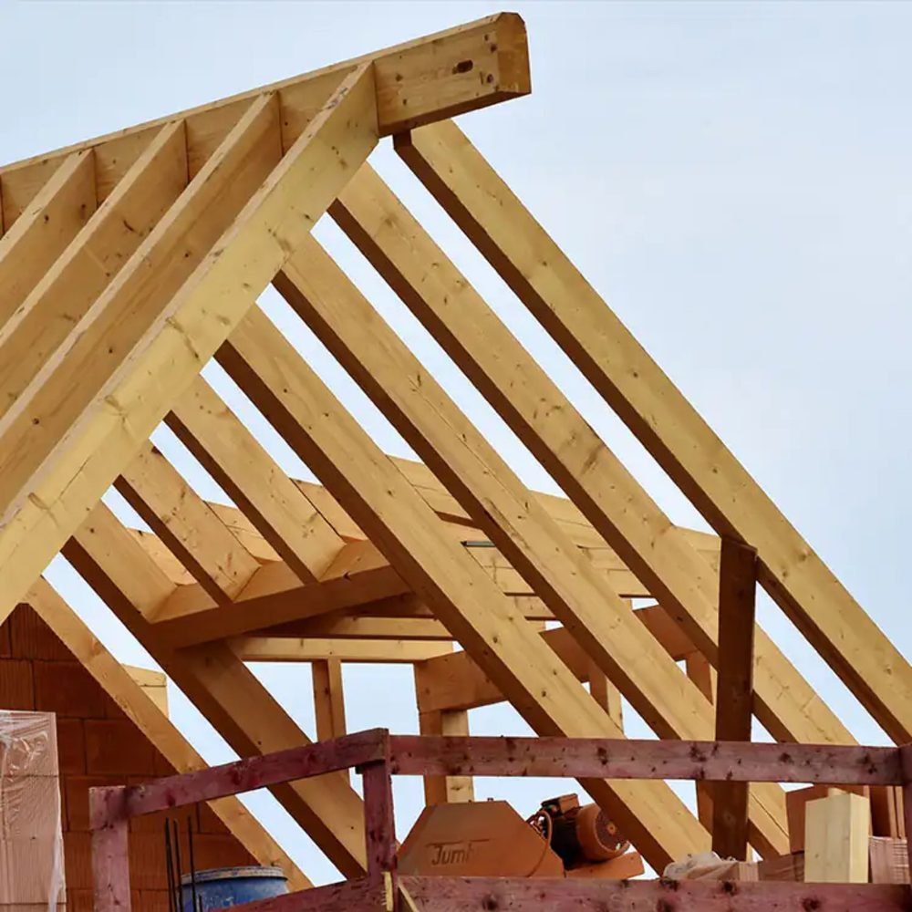
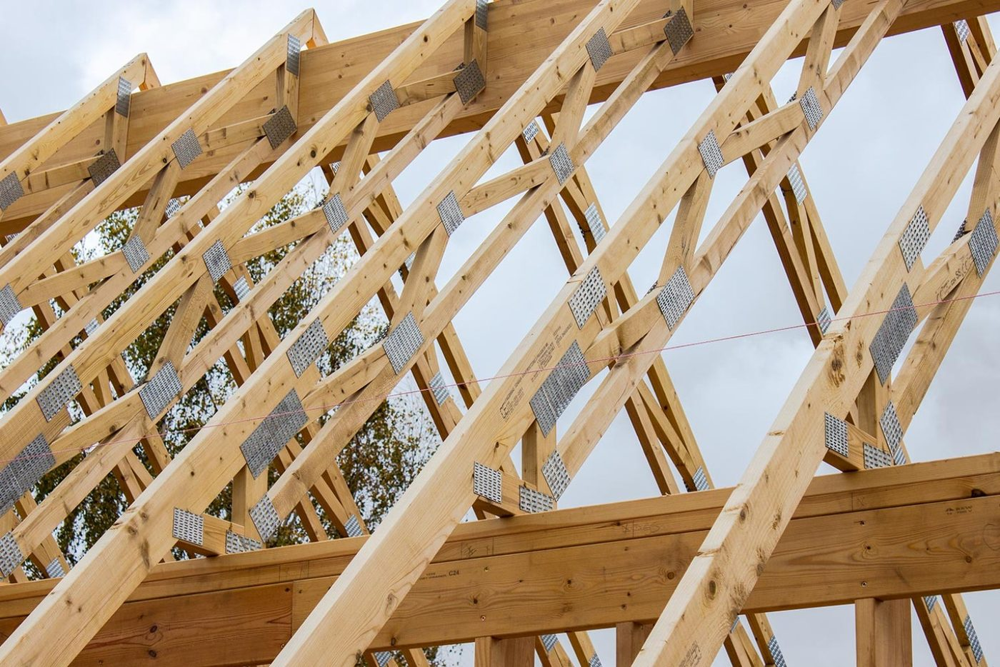

Acoperișuri noi
Montaj de acoperișuri noi și învelitori moderne.
ACOPERIȘURI • DROBETA-TURNU SEVERIN • MEHEDINȚI
Montaj, reparații, refaceri și mansardări. Soluții complete pentru acoperișuri în Drobeta-Turnu Severin și județul Mehedinți.
Șarpantă, țiglă metalică, învelitori, izolații, tinichigerie, jgheaburi și burlane.
SERVICII ACOPERIȘURI
Executăm lucrări pentru case și clădiri în Drobeta-Turnu Severin și județul Mehedinți.
Montaj de acoperișuri noi și învelitori moderne.
Remedierea infiltrațiilor și problemelor locale.
Renovarea și înlocuirea componentelor uzate.
Transformarea podului în spațiu util.
Montaj și înlocuire pentru învelitori metalice.
Izolații și folii de protecție pentru acoperiș.
Montaj și înlocuire pentru evacuarea apei pluviale.
Dolii, coame, sorturi, borduri și elemente metalice.
ACOPERIȘURI PERFECTE • MEHEDINȚI
Acoperișuri Perfecte oferă servicii de montaj, reparații și refaceri de acoperișuri în Drobeta-Turnu Severin și județul Mehedinți.
Executăm acoperișuri noi, reparații acoperișuri, refaceri acoperișuri, montaj de țiglă metalică, mansardări, izolații, jgheaburi, burlane și lucrări de tinichigerie.
Lucrăm pentru case și clădiri din Drobeta-Turnu Severin și localitățile din județul Mehedinți. Pentru o ofertă, sună direct la telefon.
LUCRĂRI
Exemple de lucrări prezentate în galerie.










SERVICII LOCALE
Oferim servicii de acoperișuri în Drobeta-Turnu Severin și în localitățile din județul Mehedinți.
Acoperișuri noi pentru case și clădiri.
Reparații pentru acoperișuri deteriorate și probleme de infiltrații.
Înlocuirea și renovarea acoperișurilor vechi.
Montaj de învelitori din țiglă metalică.
Sună pentru acoperișuri, reparații sau refaceri în Mehedinți.